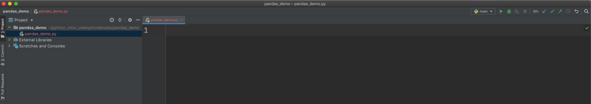

Practice Questions¶
In this chapter we learned how to install external libraries and import them into our code. We also learned how to create virtual environments and set up those virtual environments within the Pycharm IDE. The purpose of the these questions is to practice some of these skills and tools.
In these practice questions we will be installing a library called pandas and library called seaborn. These questions are not supposed to teach you how to use these libraries. Instead, the objective is to get the code to run within Pycharm and Jupyter through the use of the virtual environment. You may encounter some issues. It is common to run into issues when dealing with packages and their dependencies. If you do so, Google the problems and read and try and find solutions.
If you get stuck at any point, go back and read this chapter over again. You can also checkout the videos for Chapter 5 in the Udemy course videos which go into lots of detail on setting up the virtual environment in Pycharm.
1.¶
Use the terminal/command prompt to create a virtual environment called pandas_demo in your .venv folder using the venv tool. Then activate it and install pandas into the virtual environment with the command pip install pandas. Also install Jupyter Notebook into this virtual environment with the command pip install notebook. Finally install seaborn with pip install seaborn.
2.¶
In your my_notebooks folder create a folder called pandas_demo. Open a new project in Pycharm from the pandas_demo folder so that it is the main/root folder in your Pycharm project. Within the pandas_demo folder create a file called python_demo.py. Your setup should look something like the below screenshot.

3.¶
Set up the Python interpreter within Pycharm to use the pandas_demo virtual environment you created above. If you forget how to do this go back and watch the videos from Chapter 5 Udemy course videos relative to this question.
4.¶
To check that the environment is working within Pycharm execute the following code within the Pycharm Python console.
import pandas as pd
import seaborn as sns
df = pd.DataFrame([[1, 2, 3], [4, 5, 6]], columns=['col1', 'col2', 'col3'])
print(df.head())
print('\n\n')
iris = sns.load_dataset('iris')
print(iris.head())
col1 col2 col3
0 1 2 3
1 4 5 6
sepal_length sepal_width petal_length petal_width species
0 5.1 3.5 1.4 0.2 setosa
1 4.9 3.0 1.4 0.2 setosa
2 4.7 3.2 1.3 0.2 setosa
3 4.6 3.1 1.5 0.2 setosa
4 5.0 3.6 1.4 0.2 setosa
5.¶
Within Pycharm, use the editor to add the following code to the file pandas_demo.py
import seaborn as sns
def load_data():
return sns.load_dataset("penguins")
def pairs_plot(df):
return sns.pairplot(df, hue="species")
def group_count(df, col_name):
return df.groupby(col_name).count()
6.¶
Create a Jupyter Notebook within your my_notebooks folder. In that notebook import the functions from the pandas_demo.py
module and run the following code in Jupyter notebook. If you see the generated output then you completed these questions successfully.
Note that the functions we created in pandas_demo.py are a little silly. You would just call those libraries directly in practice. However, the point here is to understand how to import functions that you write within Python modules.
from pandas_demo.pandas_demo import load_data, pairs_plot, group_count
df = load_data()
df.head(10)
| species | island | bill_length_mm | bill_depth_mm | flipper_length_mm | body_mass_g | sex | |
|---|---|---|---|---|---|---|---|
| 0 | Adelie | Torgersen | 39.1 | 18.7 | 181.0 | 3750.0 | Male |
| 1 | Adelie | Torgersen | 39.5 | 17.4 | 186.0 | 3800.0 | Female |
| 2 | Adelie | Torgersen | 40.3 | 18.0 | 195.0 | 3250.0 | Female |
| 3 | Adelie | Torgersen | NaN | NaN | NaN | NaN | NaN |
| 4 | Adelie | Torgersen | 36.7 | 19.3 | 193.0 | 3450.0 | Female |
| 5 | Adelie | Torgersen | 39.3 | 20.6 | 190.0 | 3650.0 | Male |
| 6 | Adelie | Torgersen | 38.9 | 17.8 | 181.0 | 3625.0 | Female |
| 7 | Adelie | Torgersen | 39.2 | 19.6 | 195.0 | 4675.0 | Male |
| 8 | Adelie | Torgersen | 34.1 | 18.1 | 193.0 | 3475.0 | NaN |
| 9 | Adelie | Torgersen | 42.0 | 20.2 | 190.0 | 4250.0 | NaN |
pairs_plot(df)
<seaborn.axisgrid.PairGrid at 0x10a388fd0>
group_count(df, 'sex')
| species | island | bill_length_mm | bill_depth_mm | flipper_length_mm | body_mass_g | |
|---|---|---|---|---|---|---|
| sex | ||||||
| Female | 165 | 165 | 165 | 165 | 165 | 165 |
| Male | 168 | 168 | 168 | 168 | 168 | 168 |